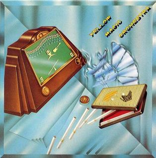
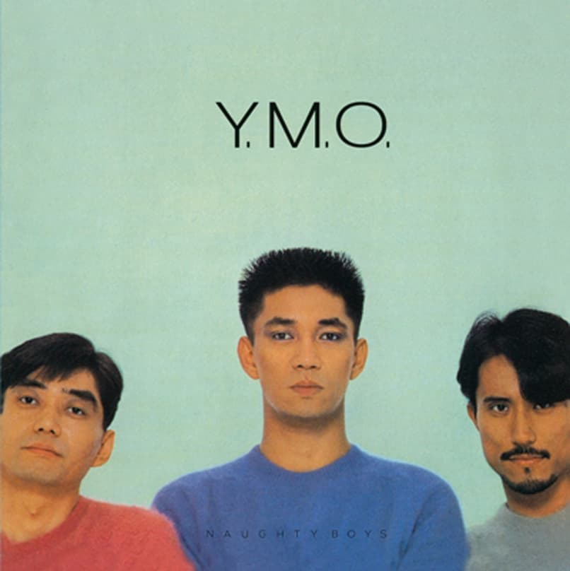
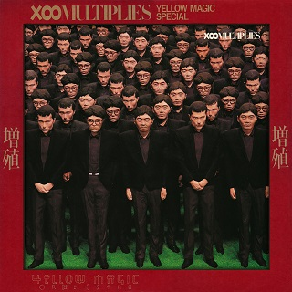
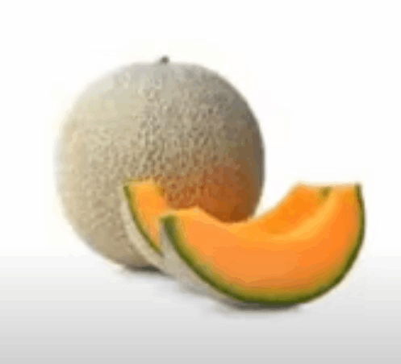

my beautiful picture collections
(images sourced locally in the internet, DO NOT CLICK THE SQUIDWARD FROM BELOW)
Yellow Magic Orchestra's Albums




random images that i can find...


cantaloupe

music found locally in internet archive

ブート - MACINTOSH PLUS
リサフランク420 - 現代のコンピュー - MACINTOSH PLUS
花の専門店 - MACINTOSH PLUS
ライブラリ - MACINTOSH PLUS
地理 - MACINTOSH PLUS
my music collection for your troubles
not enough brain power to make an yt embed :(
[ Jazzy ] - Emapea
[ just forget ] - FORCE OF NATURE
[ aruarian dance ] - Nujabes
[ F・L・Y (1991 Mix) - FLY (1991 MIX) ] - SPECTRUM
[ Hillbilly Child ] - Alan Moorhouse ‹- surely someone is familiar with this song (email me if you know the reference)
[ Chicken Fried ] - Zac Brown Band
[ my thoughts are stored on a USB drive ] - overscorn
[ The Train and the River ] - Jimmy Giuffre Trio
[ Ready to Fly ] - Masayoshi Takanaka
[ sherbet lobby (feat. bxnji) ] - nicopatty
[ Little Bitty Pretty One ] - Thurston Harris & The Sharps
[ 体操 - Taiso ] - Yellow Magic Orchestra
[ Pasilyo ] - SunKissed Lola
[ Summer Samba (So Nice) ] - Walter Wanderley
[ Huit octobre 1971 ] - Cortex
[ Come Inside Of My Heart ] - IV of Spades
[ just forget ] - FORCE OF NATURE
[ aruarian dance ] - Nujabes
[ F・L・Y (1991 Mix) - FLY (1991 MIX) ] - SPECTRUM
[ Hillbilly Child ] - Alan Moorhouse ‹- surely someone is familiar with this song (email me if you know the reference)
[ Chicken Fried ] - Zac Brown Band
[ my thoughts are stored on a USB drive ] - overscorn
[ The Train and the River ] - Jimmy Giuffre Trio
[ Ready to Fly ] - Masayoshi Takanaka
[ sherbet lobby (feat. bxnji) ] - nicopatty
[ Little Bitty Pretty One ] - Thurston Harris & The Sharps
[ 体操 - Taiso ] - Yellow Magic Orchestra
[ Pasilyo ] - SunKissed Lola
[ Summer Samba (So Nice) ] - Walter Wanderley
[ Huit octobre 1971 ] - Cortex
[ Come Inside Of My Heart ] - IV of Spades